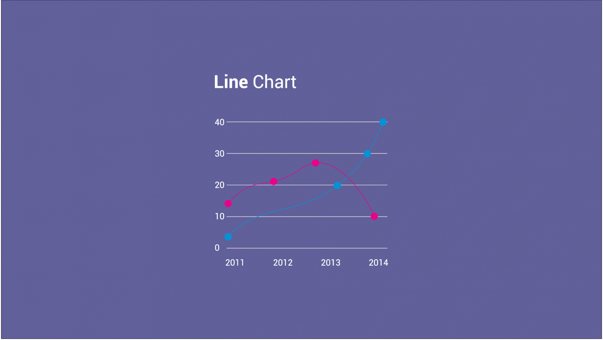

Criando relatórios em gráficos com PHP utilizando a biblioteca ChartJS e Banco de Dados
Embora a biblioteca seja em javascript, conseguimos fazer a chamada de todas as propriedades com o PHP usando uma técnica para informar os dados via data-attributes
Salve salve moquerido, seja muito bem vindo a mais uma aula.
Agora vamos ver como trabalhar com gráficos para que você possa informar as métricas para o seu cliente de uma maneira descomplicada e que seja mais fácil de fazer a leitura.
Para que a gente possa desenvolver essa atividade, vamos precisar fazer o uso de uma biblioteca! Assim a gente foca em de fato gerar as informações e a renderização do plano cartesiano você não precisa esquentar a cabeça.
Lib javascript
Realmente a biblioteca que baixamos é em javascript! Você até poderia ter um caminho mais curto para desenvolver essa estrutura, se você colocasse código PHP dentro da tag script.
Não há uma lei que proiba isso, no entanto que é até possível... Mas é claro que não é uma boa prática essa situação, pois caso isso aconteça, você não consegue modularizar o seu código, vai ter problemas com reuso e não vai poder minificar o arquivo para publicar na internet.
Então vamos trabalhar com uma outra técnica para que possamos informar todos os parâmetros via atributo do elemento, e posteriormente a gente pega esses dados com o javascript e adapta da forma que for necessário. Já vamos falar sobre essa técnica mais adiante!
Por consequência disso, vamos ter um arquivo totalmente em javascript e que você pode modularizar ele de acordo com cada tipo de gráfico! Aqui já entra um processo um pouco mais amplo de refatoração de código, de efetuar essa carga somente se tiver um elemento que irá fazer o uso...
Mais uma vez podemos nos aprofundar em outro tópico que daria outra aula, mas como o nosso foco aqui é criar um gráfico para colocar na nossa aplicação, vamos seguir em frente por hora.
Passagem de valores por data-attributes
Essa técnica é bastante simples e consiste em montar o nó do componente HTML já com os dados alimentados.
Não entendeu? Pensa assim:
<canvas class="myChart"></canvas>
Com isso, você não sabe quais informações vão para dentro dele, qual será a cor do seu gráfico, se o título será exibido ou se estará oculto, quantas posições serão informadas e nem mesmo o valor de cada um dos eixos!
Agora a gente pode trabalhar com o data-* para informar algumas propriedades:
<canvas class="myChart"
data-chart-background-color="blue"
data-chart-border-color="blue"></canvas>
Assim você já consegue informar alguns dados que podem ser resgatados de forma bastante simples pelo javascript, e forçar determinados parâmetros. Para recuperar essas informações, ficaria assim:
<script>
$(function(){
var myChart = $('.myChart');
console.log(myChart.data('chart-background-color'));
});
</script>
Note que para fazer isso, estamos dentro da tag script, e inicializamos o jquery!
Feito isso, basta criar uma variável para armazenar o objeto que foi resgatado com o seletor e usar essa variável como base para pegar o atributo desejado.
Veja que é informado o .data('nome-atributo') e não há o data- no início conforme é demarcado no HTML. Fica tranquilo que é exatamente assim que funciona.
Uma vez feito isso, basta você replicar essa mesma técnica para outras posições que você queira!
Quanto tiver um vetor, você pode concatenar cada uma das posições e adicionar um caracter delimitador entre elas. No caso dessa aula, eu usei o pipe (|) porque eu sei que isso não vai aparecer em nenhuma ocorrência das minhas posições.
Então quando eu tenho que resgatar vários labels por exemplo, eu concateno todos eles e depois executo um split com o javascript e roda tudo lindo :)
Adicionando o PHP
Se você for analisar, até agora não falamos sobre o PHP! Mas além dele estar presente na consulta ao banco de dados das informações, você pode criar uma classe para funcionar como um helper para padronizar esse comportamento.
Então você pode determinar uma certa estrutura que seja capaz de definir as cores com ou sem opacidade, obter o nome das colunas que são utilizados para definir as posições dentro do seu gráfico e ainda o valor de cada uma delas respectivamente.
A principal função do PHP nesse momento, vai ser nos prover reuso do código e padronização das chamadas de cada atributo que precisamos informar!
Precisa de mais cores?
Se você seguir a aula, você vai notar que a nossa classe PHP possui 3 cores pré-definidas, mas que elas se repetem quando o meu gráfico possui mais indicadores...
Então você pode querer adicionar mais cores ao seu gráfico ou ainda pegar outras tonalidades para ficar mais coerente com a sua aplicação.
Eu consegui essas cores usando um código de dentro do codepen :)
Repliquei ele para minha conta e você consegue acessar clicando nesse link aqui!
Basicamente o que você precisa fazer é usar o seletor de cor até encontrar a desejada e pegar o código dela em RGB. Como você também deve saber, você deve adicionar uma propriedade a mais para informar a opacidade :)
Feedbacks
Se você curtiu essa aula e conseguiu reproduzir aí no seu ambiente, me deixe saber! E também se colocar pra rodar em algum cliente com essa mesma técnica que vimos aqui :)
Forte abraço, e a gente se vê na próxima aula!